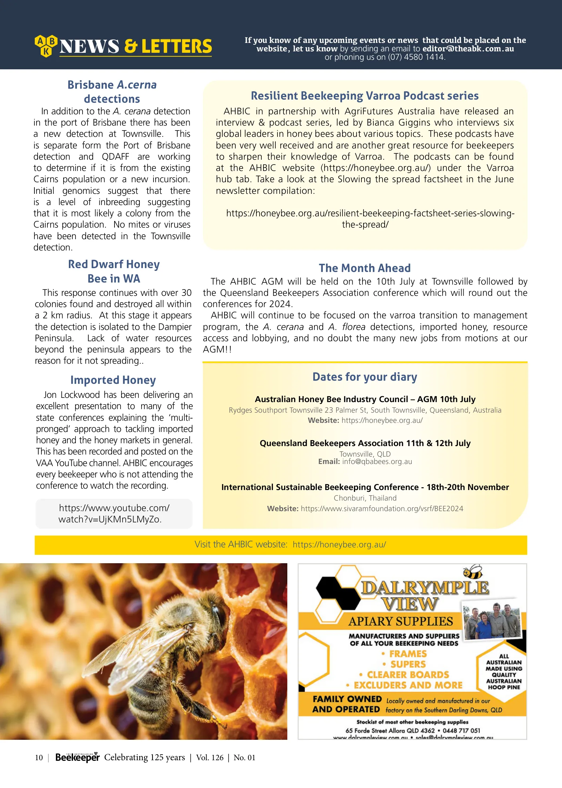

If you know of any upcoming events or news that could be placed on the
website, let us know by sending an email to editor@theabk.com.au
or phoning us on (07) 4580 1414.
NEWS & LETTERS
https://www.youtube.com/
watch?v=UjKMn5LMyZo.
Dates for your diary
Queensland Beekeepers Association 11th & 12th July
Townsville, QLD
Email: info@qbabees.org.au
Australian Honey Bee Industry Council – AGM 10th July
Rydges Southport Townsville 23 Palmer St, South Townsville, Queensland, Australia
Website: https://honeybee.org.au/
International Sustainable Beekeeping Conference - 18th-20th November
Chonburi, Thailand
Website: https://www.sivaramfoundation.org/vsrf/BEE2024
Red Dwarf Honey
Bee in WA
Imported Honey
Resilient Beekeeping Varroa Podcast series
The Month Ahead
This response continues with over 30
colonies found and destroyed all within
a 2 km radius. At this stage it appears
the detection is isolated to the Dampier
Peninsula. Lack of water resources
beyond the peninsula appears to the
reason for it not spreading..
Jon Lockwood has been delivering an
excellent presentation to many of the
state conferences explaining the ‘multi-
pronged’ approach to tackling imported
honey and the honey markets in general.
This has been recorded and posted on the
VAA YouTube channel. AHBIC encourages
every beekeeper who is not attending the
conference to watch the recording.
AHBIC in partnership with AgriFutures Australia have released an
interview & podcast series, led by Bianca Giggins who interviews six
global leaders in honey bees about various topics. These podcasts have
been very well received and are another great resource for beekeepers
to sharpen their knowledge of Varroa. The podcasts can be found
at the AHBIC website (https://honeybee.org.au/) under the Varroa
hub tab. Take a look at the Slowing the spread factsheet in the June
newsletter compilation:
The AHBIC AGM will be held on the 10th July at Townsville followed by
the Queensland Beekeepers Association conference which will round out the
conferences for 2024.
AHBIC will continue to be focused on the varroa transition to management
program, the A. cerana and A. florea detections, imported honey, resource
access and lobbying, and no doubt the many new jobs from motions at our
AGM!!
https://honeybee.org.au/resilient-beekeeping-factsheet-series-slowing-
the-spread/
Brisbane A.cerna
detections
In addition to the A. cerana detection
in the port of Brisbane there has been
a new detection at Townsville. This
is separate form the Port of Brisbane
detection and QDAFF are working
to determine if it is from the existing
Cairns population or a new incursion.
Initial genomics suggest that there
is a level of inbreeding suggesting
that it is most likely a colony from the
Cairns population. No mites or viruses
have been detected in the Townsville
detection.
Visit the AHBIC website: https://honeybee.org.au/
10 |
Celebrating 125 years | Vol. 126 | No. 01